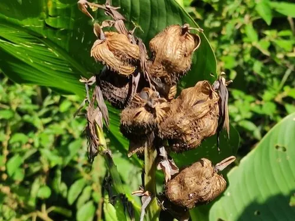

水生植物 · 植物界
美人蕉 Canna indica

美人蕉科美人蕉属多年生草本，叶片宽大、花红黄艳丽，原产热带美洲，是常见的园林水景和花坛观赏植物。
- 分类
- 门被子植物门纲单子叶植物纲目姜目科美人蕉科属美人蕉属
- 栖息环境
- 热带美洲的河岸湿地，喜温暖湿润、阳光充足
- 地理分布
- 原产热带美洲，中国南北各地广泛栽培
- 保护级别
- 暂无评估
物种志
美人蕉为美人蕉科美人蕉属的多年生草本，株高 1–2 米，具粗壮根状茎。叶片互生，宽大，卵状长圆形，长 20–40 厘米，表面绿色或带紫红色。花序为总状花序，花大，红色、黄色或橙红色，花期夏季至秋季；果实为蒴果，种子黑色、坚硬。
美人蕉原产热带美洲，中国南北各地广泛栽培，喜阳光充足、温暖湿润和肥沃的土壤，耐湿、耐旱，也适合在浅水边种植。它叶片宽大、花色艳丽，花期长，是园林花坛、水景和道路绿化的常见植物；根状茎富含淀粉，可作饲料，也可入药。栽培以根状茎分株繁殖为主，春季将根状茎切段栽种；生长期间保持充足水分和光照，花后及时剪除残花。
形态与习性
- 株高1–2 米
- 叶片宽大，卵状长圆形，长 20–40 厘米
- 花期夏季至秋季，花红、黄或橙红
- 光照极喜光
- 水分喜湿润，耐湿也耐短期干旱
- 土壤肥沃、排水良好的壤土
- 繁殖根状茎分株
- 主要用途花坛、水景、道路绿化
趣味知识
- 美人蕉的叶片宽大，花大而艳丽，花期可从夏季持续到秋季。
- 它原产热带美洲，喜湿耐热，常种在池边和花坛。
- 美人蕉的根状茎富含淀粉，可作饲料，也可入药。